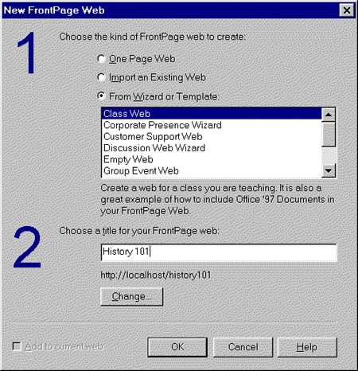
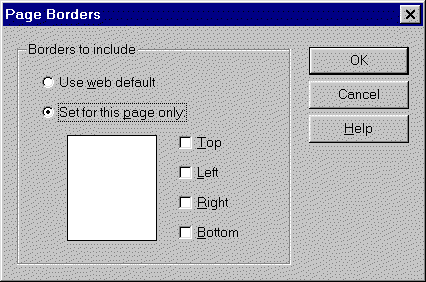
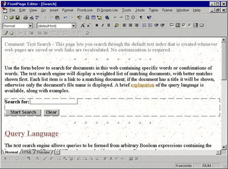
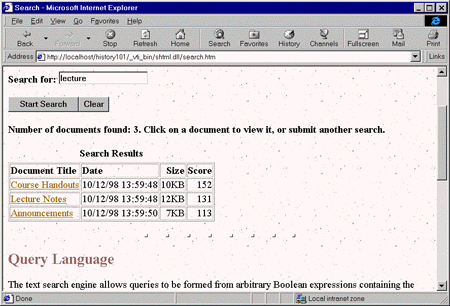
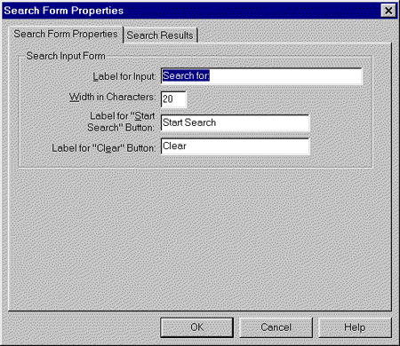
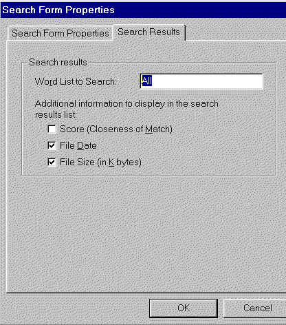

|
| ||
|
| ||
Brought to you by Inside Microsoft
FrontPage, a ZD Journals publication. Click here for a free issue  .
.
How do people find things on the Web? At portal sites like Yahoo!, there are two main ways: navigating through a directory or typing in keywords. So, how do people find things on your Web site? You probably have some sort of navigation system -- which is roughly equivalent to Yahoo!'s directories -- but you're less likely to have a search feature. After all, creating such a feature seems beyond the capabilities of many Web designers. In reality, though, FrontPage has a built-in search feature that you can use to quickly add a search form to your pages. We'll examine this feature in this article.
To test FrontPage's search feature, it will help to have a large Web site to work with, so we'll use one of the FrontPage wizards to quickly create one. Launch FrontPage Explorer and, in the Getting Started dialog box, enable the Create A New FrontPage Web option button; then, click OK. In the New FrontPage Web dialog box, shown in Figure A, choose Class Web from the list of wizards, name your new Web site History 101, and click OK.

Figure A. We'll create a class Web site to test the search function
Now, switch to FrontPage Editor and choose the File menu's New option. Click Search Page and then click OK to create your page. As you'll see, the new search page will use the current Web's theme and will include any shared borders that are set up in the Web.
Let's get rid of the shared borders, so we can see exactly what the search page consists of. To do so, choose the Tools menu's Shared Borders option. In the dialog box that appears, shown in Figure B.

Figure B. Turn off the shared borders so you can see exactly what the search page includes
Enable the Set For This Page Only option button, and then deselect the Top, Left, and Bottom check boxes. (The Right box should already be unchecked.) Click OK to continue. The page should now look like the one in Figure C. Save the page as search.htm.

Figure C. FrontPage creates a fully functional search page
At this point, the search page is fully functional, so we can test it in the browser. Click the Preview In Browser button to launch the page. In the Search For text box, type lecture; then, click Start Search. In just a few seconds, a new, dynamically-generated page will appear.
This new page is identical to search.htm, except that it lists the three HTML pages in the Web that include the search term, as Figure D shows. Each listing includes the page's title -- which is a hyperlink to the actual page -- as well as the date the file was last modified and its size. (If the page is untitled, its filename will appear instead.)

Figure D. The search-results page lists all the pages that include the search terms
Search works so quickly because FrontPage maintains a complete current index of the text on your pages. Each time you save a page or recalculate hyperlinks, FrontPage updates its index.
Now, let's return to FrontPage Editor and take a closer look at the search page. The heart of the page -- and the thing that makes the search feature work -- is the search component, which appears in a dotted rectangle in the middle of the page, as Figure C shows. We'll look at how you can modify the component in a moment.
Note: If you want to add a search form to an existing page, choose Insert | Active Elements | Search Form. FrontPage will add a search form to the page. This form won't include the instructions and other content shown in Figure C.
Everything else you see consists of ordinary page elements, which means you can make whatever changes you want. For example, you might want to shorten the first paragraph of instructions or include sample search terms at the bottom that better fit the content of your site. You might also add a page banner or images to spice up the page's appearance.
To modify the search component itself, double-click on it to open the Search Form Properties dialog box shown in Figure E. As you can see in the figure, the first tab of the dialog box lets you change the original appearance of the search form. Specifically, you can change the text box's title and the labels of the two buttons.

Figure E. You can change the appearance of the search form in the Search Form Properties dialog box
One point about the Width In Characters setting is worth noting here. This setting controls only the width of the text box, not the length of the search terms users can type. The content of the box will scroll to the left if someone types more text than you've allowed space for.
The other tab in the dialog box, Search Results, gives you some control over the appearance of the results of a search, as Figure F shows. Notice that the two selected check boxes in the figure correspond with the extra columns that appear in Figure D.

Figure F. On this page of the dialog box, you can change how the search results will appear
You can also enable the Score (Closeness Of Match) check box to include a numerical score for each page listed. We've found this score to be less useful than the percentages some Web search engines use. Moreover, the pages are listed in order based on the quality of the match, so the score is somewhat redundant.
The final option in the dialog box, Word List To Search, is a little less complicated than its name sounds. As we said earlier, FrontPage maintains a text index of all your pages. What we didn't say is that it also maintains an index of each discussion group you create.
In the Word List To Search text box, you can either type All or type the name of a discussion group's directory -- if the discussion group's files were in www.mywebsite.com/_internet, then you would type _internet in the text box.
Beyond the settings we just discussed, you can't make any other changes to the FrontPage search form. For example, you can't limit the search to certain directories (except discussion group directories) or change the text that appears at the top of the list of search results.
You also can't explicitly exclude pages from being searched. However, pages in directories that start with an underscore character (again with the exception of discussion groups) won't be searched.
Occasionally, a search may fail even though you know the search terms appear in your Web site. Or, the search results may include a page you've deleted from the Web. When that happens, choose FrontPage Explorer's Tools menu's Recalculate Hyperlinks option to re-create the text index. Try this first on the local copy of your Web, and then on the live copy on the Web server. If that doesn't work, try the procedure listed in this Knowledge Base article:
http://support.microsoft.com/support/kb/articles/q170/9/75.asp 
Another problem crops up when you're using Microsoft Internet Information Server (IIS) version 3 or 4 and you have Microsoft Index Server installed. In those cases, the Index Server actually takes over the functionality of the search component. For more information on this issue, see these Knowledge Base article, "How to Use FrontPage with Microsoft Index Server on IIS 3.0," found at
http://support.microsoft.com/support/kb/articles/Q166/3/57.asp 
and, "Using FrontPage 98 Search Engine Instead of MS Index Server," found at
http://support.microsoft.com/support/kb/articles/q181/2/04.asp 
Finally, like most search engines, the one in FrontPage ignores some common words, such as a, an, and the. For a complete list of these words, see
http://support.microsoft.com/support/kb/articles/q156/8/61.asp 
FrontPage's search component is a powerful yet easy-to-use feature. Combined with a good navigation system, it can help users find what they're looking for on your Web site, no matter how large or complex that site is.
Copyright © 1998, Ziff-Davis Inc. All rights reserved. ZD Journals and the ZD Journals logo are trademarks of Ziff-Davis Inc. Reproduction in whole or in part in any form or medium without express written permission of Ziff-Davis is prohibited.
Did you find this material useful? Gripes? Compliments? Suggestions for other articles? Write us!
© 1999 Microsoft Corporation. All rights reserved. Terms of use.